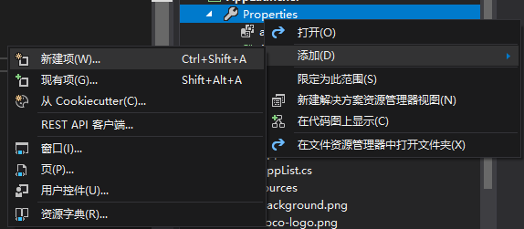
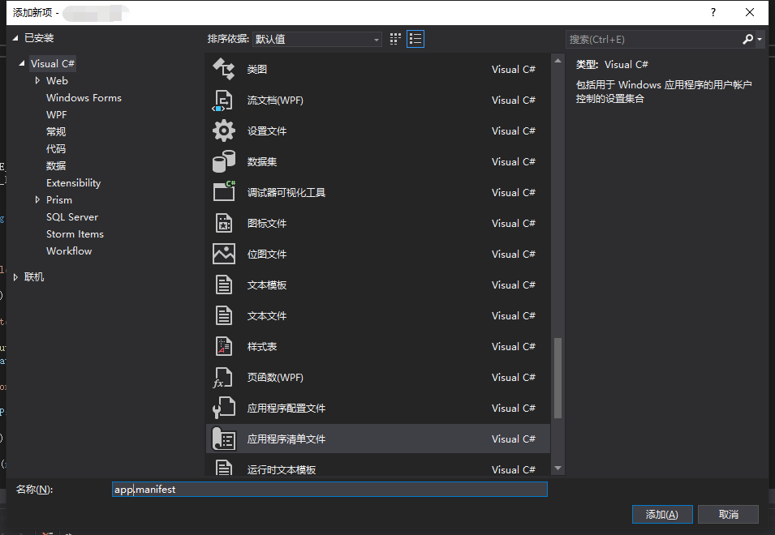

最近写了一个桌面程序，里面用了些读取系统环境变量、提取文件图标、启动外部程序之类的操作。
然后…………卡巴斯基就把它识别成了HEUR:Trojan.Win32.Generic…………
咱遵纪守法好程序，怎么说是木马就是木马了呢？？？
然而问题就是问题，该解决还是得解决……
在各种失败的尝试之后，试着把程序声明为需要管理员权限执行，结果……卡巴斯基不再动手了！
这什么原理………………_(:з」∠)_
嘛，还是写一下设置步骤吧：
工程下的Properties里，添加应用程序清单文件（app.manifest）


然后把app.manifest里的
<requestedExecutionLevel level="asInvoker" uiAccess="false" />
改成
<requestedExecutionLevel level="requireAdministrator" uiAccess="false" />
重新编译，安全软件就不会找麻烦了